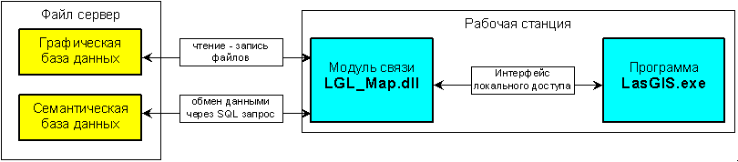
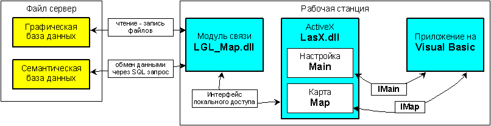
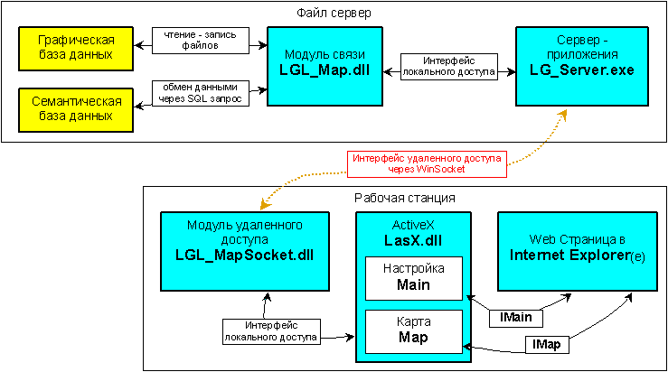

Программный комплекс "LasGIS" может работать:
Программа "LasGIS" работающая в локальной сети была создана в 1993 году и работала в системе DOS. В качестве компилятора был выбран "Borland C++" и "Paradox Engine". При этом осуществлялся запрос к графической и семантической базе данных.
В графической базе хранится информация по графическим объектам карты (векторная графика в виде плоскостных, линейных и точечных объектов) и растровая подложка. Для векторной графики был выбран оригинальный формат хранения. Система доступа писалась на C++.
В семантической базе данных хранится атрибутивная информация о графических объектах карты. Семантическая база данных представляет собой систему реляционных таблиц (формат Paradox .db) с доступом через Paradox Engine. При этом отдельная таблица соответствует отдельному типу графических объектов, соотношение которых определяется в настройке системы.
Работу системы "LasGIS" в локальной сети в среде Windows 95/98/2000/NT/XP определяют два модуля:

Рисунок 1.
Интерфейс локального доступа представляет собой определенный набор функций, связывающих библиотеку динамической компоновки LGL_Map.dll с основной программой LasGIS.exe. Интерфейс локального доступа это основной интерфейс системы, который работает и в других частях системы (см далее).
Для доступа к базам данных LasGIS из других приложений был создан ActiveX объект "LasX" (см. рисунок 2).
Объект LasX имеет в себе два объекта типа Control это окно Main и окно Map. В окне Map расположена карта, а в окне Main находится список слоев и объектов слоя, которыми пользователь может управлять (закрыть или открыть для отображения в окне Map). Если нет необходимости отображать список слоёв, окно Main можно не создавать.

Рисунок 2.
Объект LasX через интерфейс локального доступа связан с модулем связи LGL_Map.dll, а через него с базой данных LasGIS.
Для работы с удаленным доступом был создан сервер приложения LG_Server.exe и модуль удаленного доступа LGL_MapSocket.dll. Эти два модуля как бы разрывают интерфейс локального доступа и транслируют запрос через Internet:

Рисунок 3.
Кроме того, сервер приложения поддерживает несколько связей и выполняет функции администратора для обеспечения легальности доступа и ограничения полномочий (простой пользователь может только смотреть карту, но не редактировать).
Связь между сервер приложением и модулем удаленного доступа осуществляется через WinSocket по URL, который передается в web-страницу в параметрах объекта.
В качестве приложения, работающего через удаленный доступ, может быть любое приложение, работающее через интерфейс локального доступа:
В последнем случае второй "LG_Server.exe" является дополнительным буфером, который замыкает запрос. Если информация, необходимая клиенту уже есть на данном сервере, то запрос выполняется на этом сервере, а не транслируется к первому серверу.
Информация, передаваемая по удаленному доступу:
| Тип запроса | Запрос | Ответ |
|---|---|---|
| Векторная графика | Границы прямоугольника запрашиваемой зоны в абсолютных координатах плюс список необходимых для передачи слоев и типообъектов слоя. | Список графических объектов в виде заголовка и списка точек объекта. Точка объекта это координаты X,Y,Z. |
| Растровая карта | Границы прямоугольника запрашиваемой зоны с указанием разрешения устройства экрана (принтера) в абсолютных координатах. | Файл растровой информации в сжатом виде (сжатие в формате .pcx) |
| Атрибутивная информация | Строка SQL запроса | Описание заголовка + последовательный вывод всех полей результирующей таблицы или признак успеха, если был запрос типа INSERT |
Вот пример web-страницы с получением карты:
<html><head>
<meta http-equiv="Content-Type" content="text/html; charset=windows-1251">
<script LANGUAGE="VBScript">
<!--
Sub Window_OnLoad()
Main.Load "//laskin.omsk.ru/SetMap1/", "User", ""
Map.Main = Main
Map.GotoPoint 2, 10000, 15450.0, 9330.0
End Sub
Sub Main_ChangeSelect(TypeChange)
Map.Redraw
End Sub
//-->
</script>
<title>Проверка LasX на VBScript</title>
</head><body>
<h3>Проверка LasX на на VBScript</h3>
<p>
<!-- объект Главной конфигурации -->
<object ID="Main" WIDTH="300" HEIGHT="600"
CLASSID="CLSID:CFF2C7CF-A317-11D4-B406-008048FB8A7C">
</object>
<!-- объект карта -->
<object ID="Map" WIDTH="500" HEIGHT="600"
CLASSID="CLSID:CFF2C7D2-A317-11D4-B406-008048FB8A7C">
</object>
</p>
</body></html>